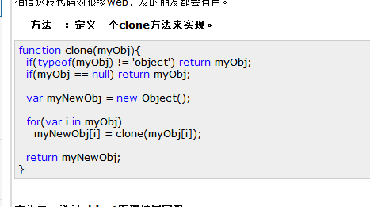
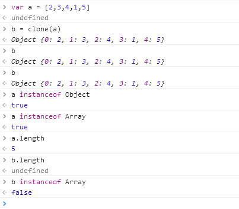
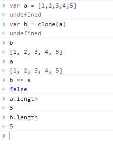
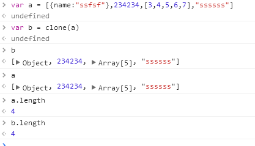

网上流传的js对象克隆实现函数的坑

发布于
网上随便一搜js Object克隆，看到最多的是下图这样的，这个clone函数没有经过仔细的测试，使用的时候会有很多的坑，不小心看到了，所以打算写篇文章来解剖一下。
整理一下,是下面这样的：
//这份是网上随便一找的，是有坑的
function clone(myObj) {
if (typeof (myObj) != 'object') return myObj;
if (myObj == null) return myObj;
var myNewObj = new Object();
for (var i in myObj)
myNewObj[i] = clone(myObj[i]);
return myNewObj;
}
很明显，克隆的时候再处理数组的时候是一处坑，做一个实验可以很明显的显示出来：

变量a是一个数组，变量b是通过调用clone函数克隆的a，之后打印b，b是一个对象，而不是一个数组，a是有length属性的，b是没有length属性的，用instanceof判断b，b也不是Array的实例。
于是，我们来改进一下吧：
//改进之后的
function clone(myObj) {
if (typeof (myObj) != 'object') return myObj;
if (myObj == null) return myObj;
var myNewObj;
if (myObj.constructor) {
myNewObj = new myObj.constructor();
} else
myNewObj = {}
for (var i in myObj)
myNewObj[i] = clone(myObj[i]);
return myNewObj;
}
测试一：

数组测试没问题
我们来点复杂一点的

这个也没问题。
OK！我也是几分钟改进，几分钟测试验证，不敢保证绝对的好，不过至少比网上流传的那份好，有瑕疵的地方欢迎大家留言指正！
评论
或 匿名发表评论